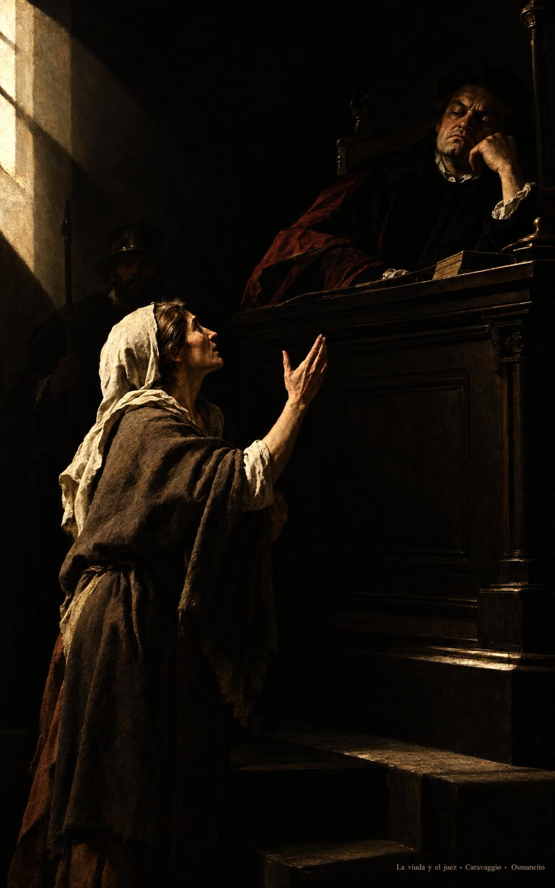
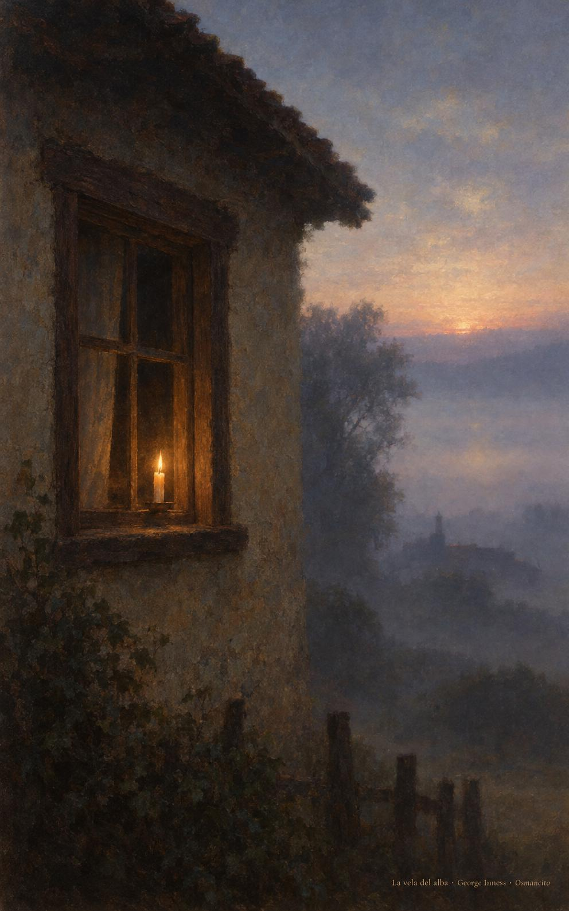

14 de noviembre de 2026
¡Buenos días!
Clamar día y noche
35
Es necesario orar siempre, sin desfallecer.
Lucas 18,1. Fuente
Que oremos siempre y no nos cansemos de llamar. Que volvamos a la puerta cada mañana como la viuda que insiste, seguros de que alguien escucha detrás del muro. Que hagamos justicia sin tardar a quien clama de noche. Que ayudemos al hermano que pasa de camino y le demos lo que necesita para seguir. Que nuestra voz no se apague antes del alba y la fe nos encuentre despiertos, juntos, con la palabra encendida.

- La viuda sigue de pie ante el juez sentado y alza la mano una vez más: Lucas 18, pedir sin desfallecer.

- La vela sigue encendida en la ventana cuando ya clarea: la oración que no se apagó en la noche.
¡Feliz sábado 14 de noviembre!
😊🙋♂
© 2026 Osmancito